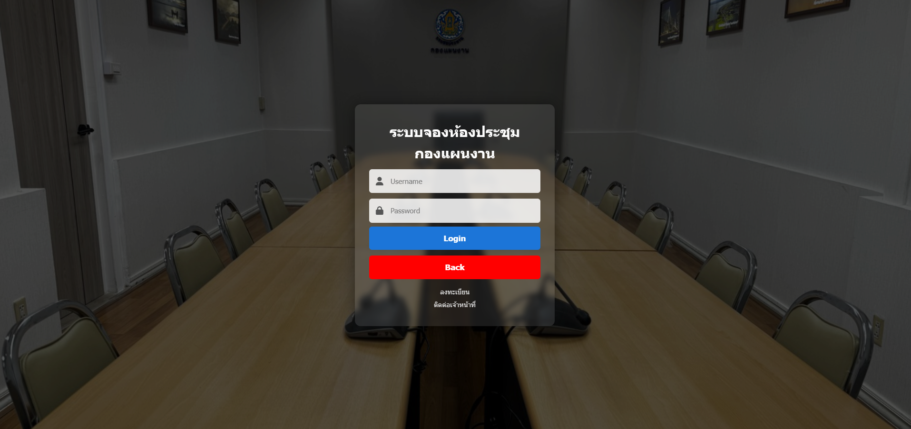

2555
ประกาศนียบัตรวิชาชีพ
วิทยาลัยเทคโนโลยีพระรามหก
สาขาเทคนิคคอมพิวเตอร์
จรัสฝน พูลละคร — นักวิชาการคอมพิวเตอร์
ส่วนบริหารทั่วไป กองแผนงาน
กรมชลประทาน
ทำความรู้จักและแนวทางการทำงาน
ปฏิบัติงานด้านเทคโนโลยีสารสนเทศ โดยดูแลเว็บไซต์และสื่อออนไลน์ แก้ไขปัญหาคอมพิวเตอร์และระบบเครือข่าย รวมถึงพัฒนาระบบสารสนเทศเพื่อสนับสนุนการปฏิบัติงานของหน่วยงาน
เส้นทางการเรียนรู้และพัฒนาความรู้
สาขาเทคนิคคอมพิวเตอร์
คณะวิทยาศาสตร์และเทคโนโลยี สาขาเทคโนโลยีคอมพิวเตอร์
คณะครุศาสตร์ หลักสูตรประกาศนียบัตรบัณฑิตวิชาชีพครู
ประสบการณ์และหน้าที่รับผิดชอบ
กรมชลประทาน
โรงเรียนบ้านใหม่
กรมพลาธิการทหารบก
ผลงานและโปรเจกต์ที่สะท้อนการออกแบบ การพัฒนา และการแก้ปัญหาด้วยเทคโนโลยี

ทักษะด้านเทคโนโลยีและการทำงานร่วมกับผู้อื่น
กิจกรรม การอบรม และประสบการณ์การทำงาน
ยินดีติดต่อประสานงานและแลกเปลี่ยนข้อมูลด้านเทคโนโลยีสารสนเทศ